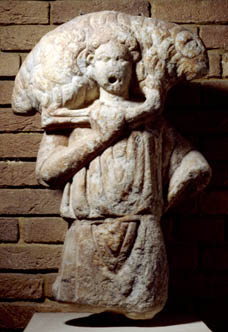

|  |
Archaeology
and the New Testament This gallery
features objects from the Hellenistic, Roman and early Byzantine
periods in the Levant (3rd century BC to 8th century AD).
Included in the gallery is a collection of finds from the 1958-64
excavations at Petra conducted by Peter J. Parr on behalf of the
British School of Archaeology in Jerusalem. Of particular interest
are terracottas depicting both animal and human subjects, and a
good series of pottery oil lamps. Also included in the gallery are
a painted cross, a carved wooden panel and a carved marble fragment
from the excavation of the Monastery of St. Lot at Deir 'Ain Abata
in Jordan, an early Christian monastic complex occupied from the
5th - 8th centuries AD, built over the cave where Lot and his daughters
are believed to have taken refuge after the destruction of Sodom
and Gomorrah. During the first century BC and most of the first
century AD, many of the Jews of Jerusalem practised the custom of
burying their dead first in the soil and then, after the flesh had
decayed, removing the bones and preserving them in a stone chest
or "ossuary" which they then placed in a burial cave. The gallery
shows three such ossuaries which were found in the Jerusalem region
in the 19th century and were presented to the British Museum by
the Palestine Exploration Fund. Other pieces of interest are two
Hellenistic bronze "lion masks", most probably used to ornament
coffins, and a jar from Khirbet Qumran of the type used to contain
the Dead Sea Scrolls, together with a textile fragment of the sort
used to wrap them.
As well as archaeological artefacts, Room 88 contains two interesting
models; one depicts Herodium, Herod's hilltop fortress, 12 km south
of Jerusalem, built after his victory over the Jews in 40 BC. The
other, of King Herod's Temple in Jerusalem, is one of a series made
at the close of the 19th century by Johann Tenz, an Anglican minister
and a frequent visitor to Jerusalem. His remarkable reconstructions
were based, not only on the literary sources, but also on the results
of the Palestine Exploration Fund's pioneering excavations in Jerusalem
undertaken at that time.  floor
map floor
map
opening
hours
|